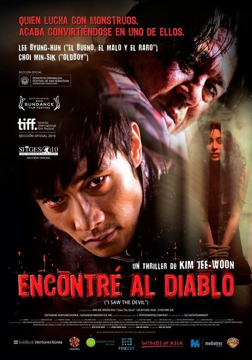

Encontré al diablo (2010)
Sinopsis Rápida
Un joven que se hace pasar por un sacerdote se infiltra en una secta siniestra, pero pronto descubre que el verdadero demonio reside en su interior.
Sinopsis Detallada
Encontré al Diablo cuenta la historia de un joven que acepta un trabajo como asistente para un pastor aparentemente bondadoso. Sin embargo, la tranquilidad de la iglesia esconde una oscuridad aterradora. Mientras el protagonista desvela las retorcidas prácticas de la secta, se enfrenta a una prueba de fe y moral que lo pondrá al límite. La película explora temas de manipulación, fe ciega y la naturaleza del mal, presentando una atmósfera claustrofóbica y llena de suspense que te dejará sin aliento.
¿Por qué tenés que verla?
{{PUNTOS_CLAVE}}Idea Extra
Análisis comparativo de la representación del mal en 'Encontré al Diablo' con otras películas de terror psicológico de Corea del Sur.
{{CONTENIDO_RELACIONADO}}